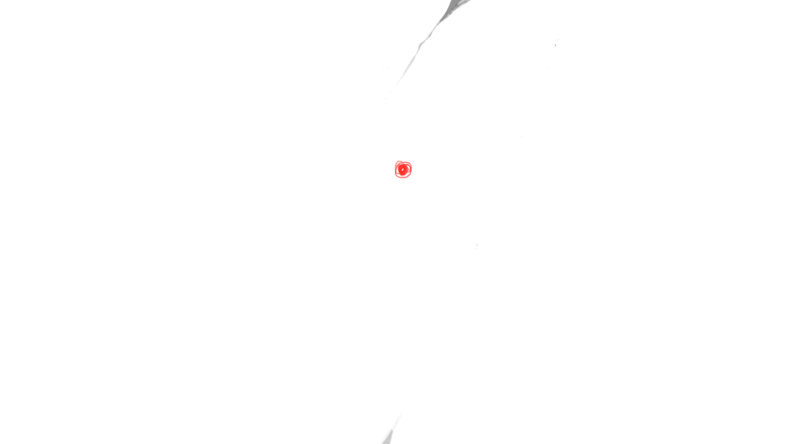
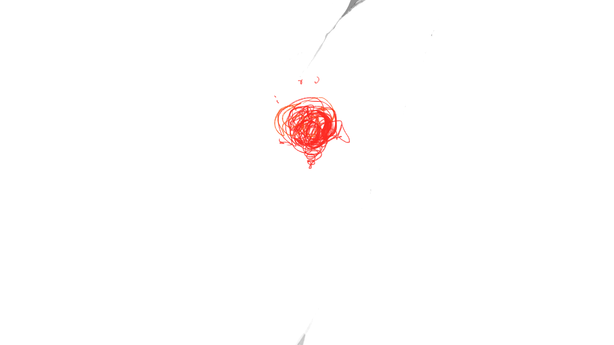
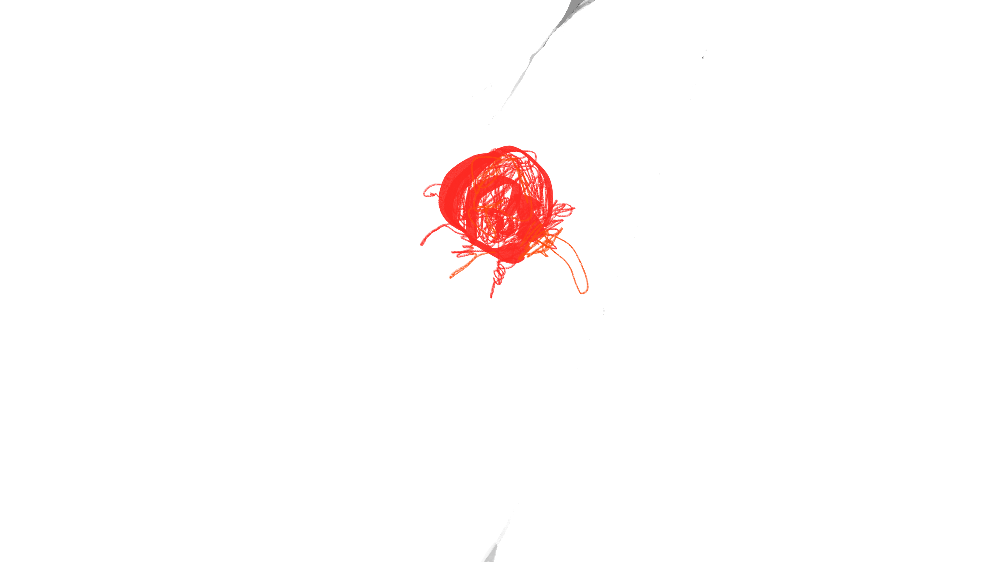
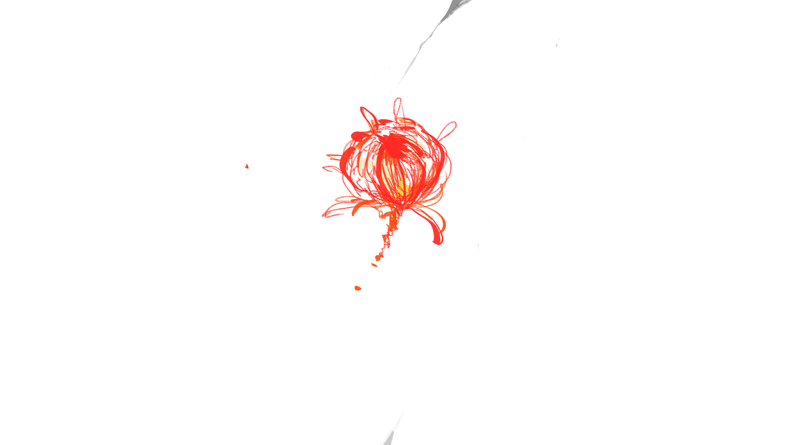
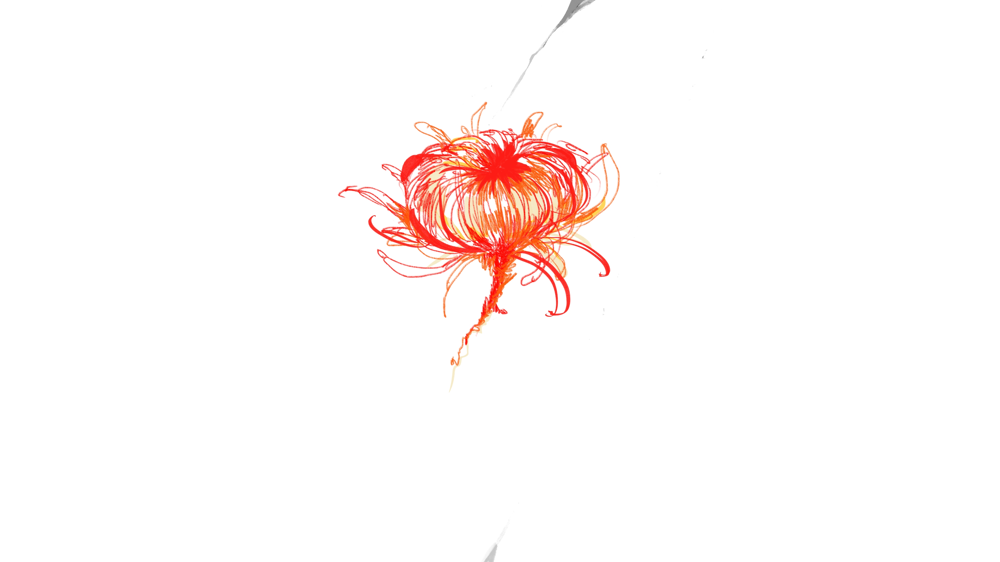
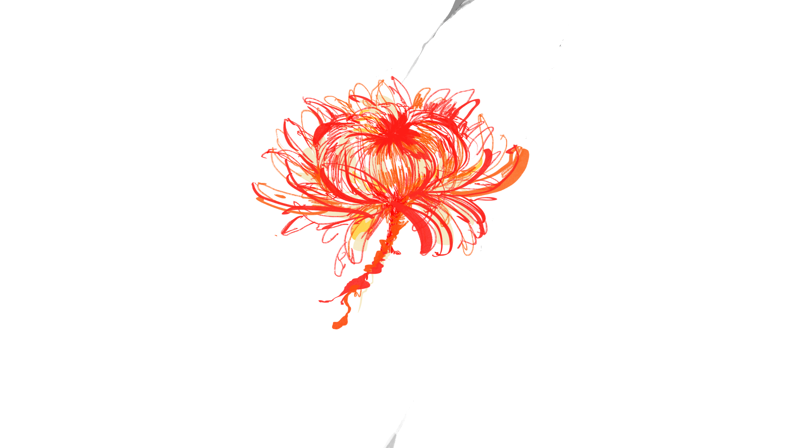
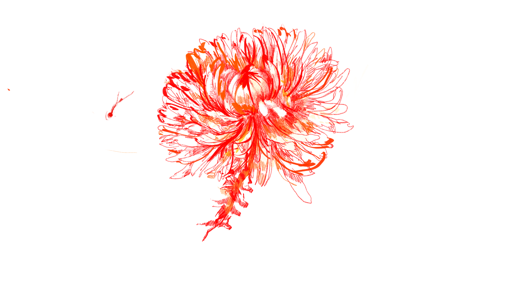

실패한 피터팬들의 이데올로기.
현실과 타협한 어른들의 자기합리화 이야기.
1970년대 후반 미국의 20대 젊은 남성을 중심으로, 현실에 적응을 거부하거나 어린이, 소년으로 남으려는 경향 또는 그러한 행동이 보이기 시작했다. 이들이 보여주는 마음의 증후군을 D. 카일리 박사는 피터 팬 증후군이라고 명명하였다. 이는 동화 속의 피터 팬이 네버랜드에 남아 영원히 어린이로 남는 것에서 착안한 것이다. 이 용어는 심리학자인 댄 카일리 박사가 1983년에 저술한 책 피터 팬 증후군: 어른이 되지 않은 사람들 과 1984년에 출간한 웬디의 딜레마에서 처음 등장한다.
청주시립미술관
2020. 11. 18.
2020. 12. 08
참여 작가.
지구벌레(@e.art.hworm)
송완오(@Swan_0)
당이(@in_kyeong)
김현주(@cremaday)
바퀴주(@bakijoo)
티켓.
전 관람 무료.
문의.
www.chunjuart.co.kr
043.000-0000
cmoa@gmail.com.
주최.
청주시립 미술관/ CMOA